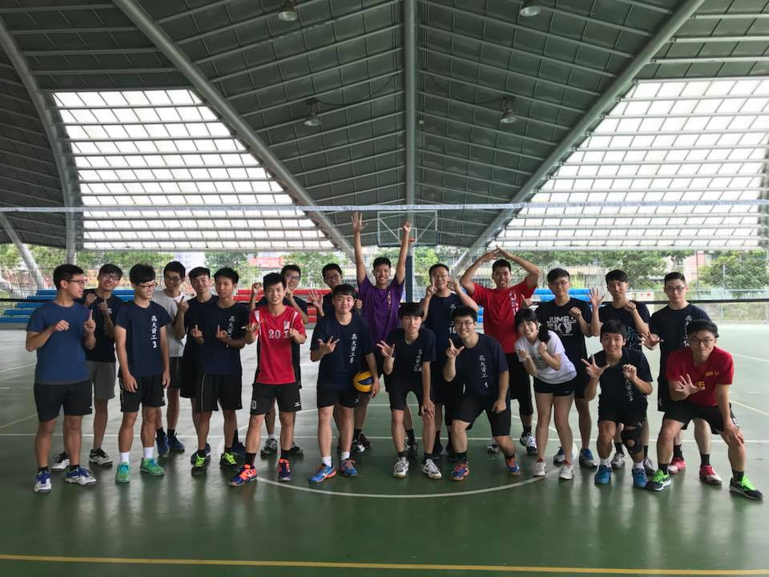
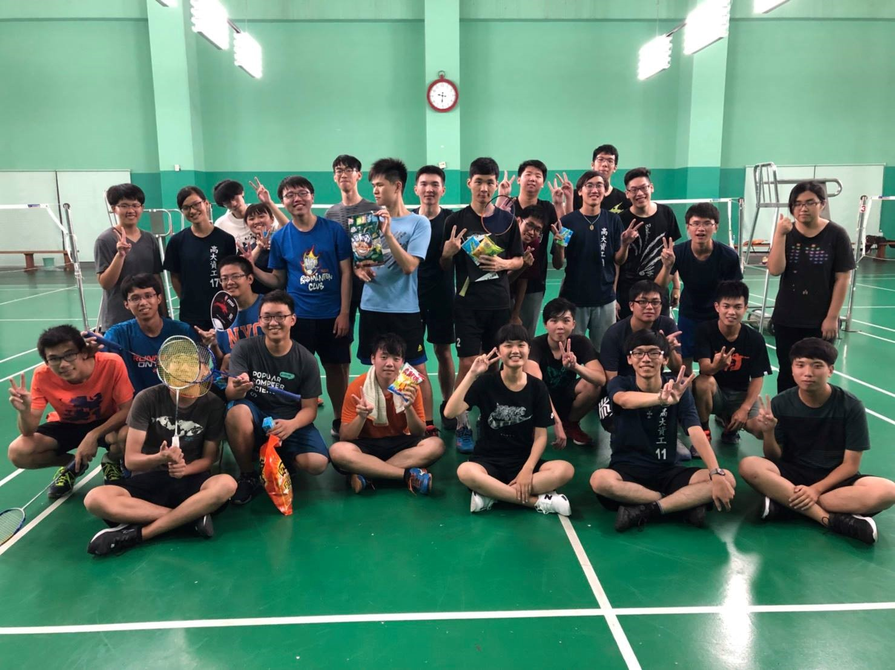
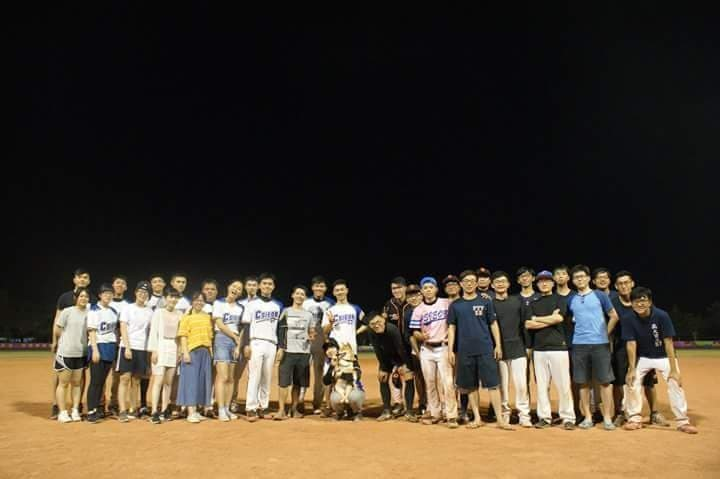
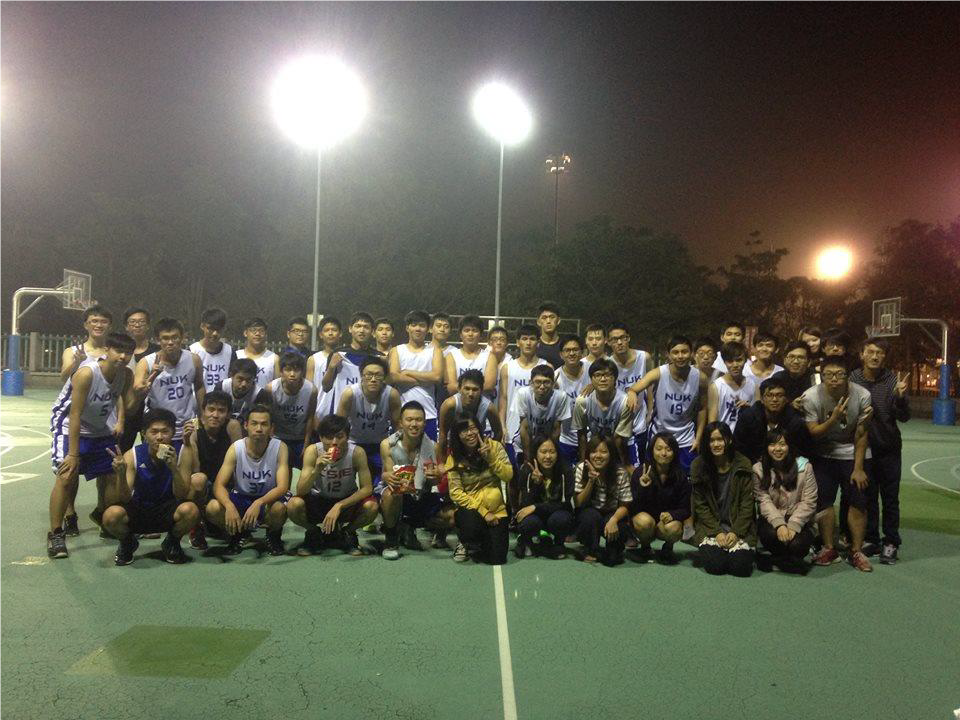

就是系隊宣傳
高大資工系排

想要體驗在空中飛翔的快感嗎？
想要學習在地上翻滾的樂趣嗎？
想要在大學留下熱血的時刻嗎？
想要的話……..就加入系排吧！！
我把所有的歡樂都放在那裡了！
讓我們一起在球場上燃燒屬於自己的排球魂吧！！
歡迎各個對排球有興趣的學弟妹一同來參與！
如果有任何問題都歡迎直接詢問學長姐喔！
FB搜尋＂高大資工歡樂系排＂也能找到我們喔！
系排隊長：資工109級 黃冠淇，FB：黃冠淇
高大資工系羽

想要在場上擊出時速300的殺球嗎？
想要與夥伴一起享受贏球的快感嗎？
想要運動卻又害怕被大太陽曬傷嗎？
加入系羽吧！
在球場上揮灑青春的汗水！
歡迎喜歡羽球的學弟妹們！
有任何疑問請洽詢學長姐哦！
FB搜尋＂高大資工CSIE-系羽＂，快來加入吧！
系羽隊長：資工110級 翁晟洋，FB：翁晟洋
高大資工系壘

你想要在球場上演出精彩的Nice Play嗎？
你想要在打擊區上一棒擊沉對手嗎？
你想要在外野疾步演出美技接殺嗎？
加入系壘就對了！！隊員、經理強力招募中！！
也歡迎有興趣的學妹來打球或當經理，
系壘隊經理會提供聚餐的補助等等的福利，來就對了！！
歡迎有興趣的學弟妹到資工系壘FB社團逛逛。
FB搜尋”高大資工系壘”
也可以加學長姐的FB詢問喔！
系壘隊長：資工109級 吳凱倫，FB：吳凱倫
高大資工系籃

想擁有像Curry一樣的外線？
或是像Lebron一樣的切入？
亦或是像Irving一樣的運球？
加入系籃是你唯一的選擇！
快來吧！帥氣的學長與美麗的學姊等著你！
FB快快搜尋↓↓↓↓↓↓↓
＂高大資工CSIE系籃之灌籃高手”